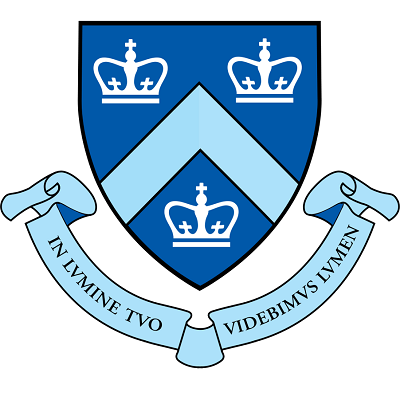
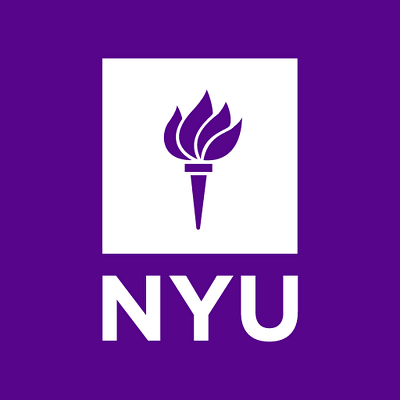
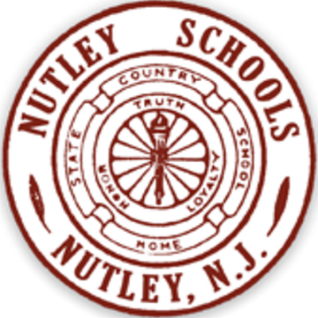

Select Coursework: Computer Science I & II, Discrete Structures I & II, Database Systems, Info & Web Programming
Select Coursework: American Presidency, Urban American Politics, Chinese Politics, International Law, Developmental Psychology, Abnormal Behavior, Social Psychology, Animal Behavior, Calculus I & II, Statistics (with Calculus)
Extracurricular Activities: Habitat for Humanity (Advocacy Committee), Project for the Homeless (Coordinator, Treasurer), Global China Connection (Marketing Division Associate Director), Table Tennis Club (Treasurer)
Select Coursework: Legal Research & Writing, Technology in the Law Office, New York Civil Practice, Real Estate, Bankruptcy, Trusts & Estates, Business Formation, Personal Injury, Trademarks & Copyrights, Criminal Law
Select Coursework: AP English III, AP Humanities (Literature, Art History, Music Theory, & Philosophy), AP Calculus, AP Statistics, AP U.S. History, AP U.S. Government & Politics, AP Macroeconomics, AP Biology, AP Chemistry, AP Physics, AP Environmental Science
Extracurricular Activities: Table Tennis Club (Founder & President), Orchestra (1st Clarinet & Piano), Octets - Men's Choir (Bass/Baritone & Piano), Concert Band (1st Clarinet), Marching Band (2nd Clarinet), Cross-Country, Track & Field (100-, 200-, 400-Meter)
Reviewed and prepared documents submitted to the U.S. District Courts, Federal Court of Appeals, and Patent Trial & Appeal Board. Prepared materials and coordinated logistics for trials (N.D. Cal.), hearings, depositions, and meetings.
Reviewed and organized case files on Relativity and Catalyst e-discovery platforms. Conducted legal research using Westlaw Next and Lexis Advance, as well as patent, file history, prior art, corporate, academic, and product research.
Researched Chinese securities, capital markets, and foreign capital investment regulations using Chinese version of Lexis. Assisted partners at Beijing corporate law firm in drafting English legal advice and interacting with international client.
Developed affidavits for applications, petitions, and motions to the USCIS and DHS, including Forms I-130, I-212, I-360, I-589, and I-601. Researched immigration policy, particularly for political asylum and VAWA-based cases.
Developed affidavits for applications, petitions, and motions to the USCIS and DHS, including Forms I-130, I-212, I-360, I-589, and I-601. Researched immigration policy, particularly for political asylum and VAWA-based cases.
Developed education consulting process by reducing student-teacher ratio by factor of 10 and expense to students and their families by 60%, and by increasing per-student compensation for education consultants by 40%.
Recruited, trained, and supervised team of education consultants with 100% retention rate. Monitored progress of, provided directions to, and coordinated workflow between students and their consultants across five time zones.
Provided guidance counseling, education planning, and writing development to 50+ students. Effectively conducted marketing events, sales meetings, and project pitches in bilingual setting.
As project leader, shaped distinctive features of company’s education consulting programs with 400+ students enrolled annually. Standardized and streamlined consulting practices and tracking for 80+ employees across eight offices.
Managed bilingual podcast, curriculum development, student performance database, social media marketing, company-wide VPN, and website redesign. Consolidated training, research, and marketing materials using cloud storage.
Tutored students ranging from kindergarten to senior high school, and prepared and graded classwork and homework packets. Managed general tutoring center operations and recruited, trained, and supervised junior assistant instructors.
House, Northeast Animal Shelter, Freedom From Hunger, and Citymeals-on-Wheels. Assisted in e-newsletter publications, SEM, SEO, and project management.
Organized and promoted “China, A New Generation” conference, Winter Finance Seminar, and Media Literacy Initiative delegation from Peking University. Designed and managed GCC’s monthly e-newsletter publication, “GCC Insights”, which surpassed 4,000 subscribers.
Provided customer service and processed retail banking transactions, including deposits, withdrawals, transfers, mortgage payments, and account inquiries. Referred customers to relevant banking products and managed branch office supply purchases.